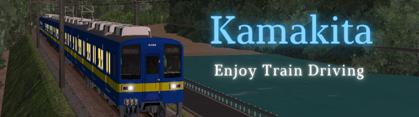

本サイト（KEI's Tech Labo）
当サイトへのリンクは「https://kei-bve.github.io/」へお願いします。バナーを用意しましたので是非お使いください。相互リンクも募集中しております。
なお、データ利用に対する謝礼は、基本的に各データ公開ページでも行っておりますが、このリンク集にかえさせていただく場合がありますのでご了承ください。
とまりさん（通過します）
NT/fivさん（かんたんのゆめ）
おーとまさん（岡オカ営業所）
Kamakitaさん（Kamakita's Page）

東武東上線をはじめとしたデータを作っておられます。路線への愛が感じられるデータとなっており、おすすめです。